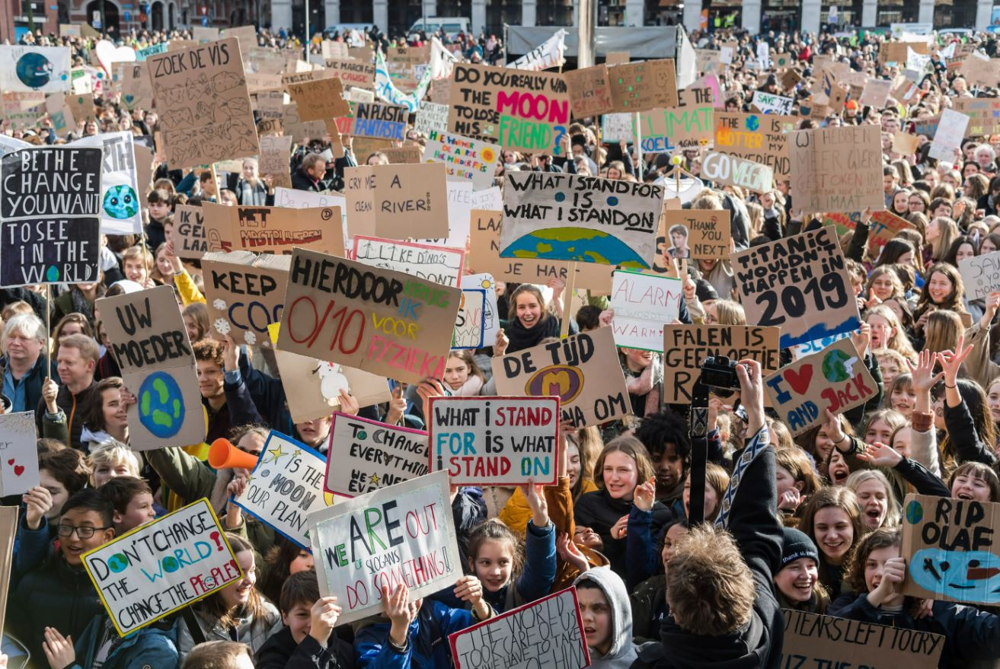

Following on from my exploratory data analysis in part 1, I now looked to formulate a research question. I was particularly interested in the link between age and political beliefs - with particular focus on climate views. There is an increasingly established viewpoint that young people are more engaged with tackling the climate crisis that older generations. Read on to discover whether this is truly the case in my dataset...
On initial impressions, there seems to be a very weak positive correlation between age and right-leaning political ideologies. A significant regression was found (F(1, 1204) = 23.43, p < 0.05), however the R2 was 0.018 indicating that age accounted for only 0.18% of variance in political ideologies. Expectedly, political beliefs as a whole are too diverse to be oversimplified as a product of age.
As demonstrated above, there is little explanatory relationship between age and political leaning. Therefore, I observed the effect of age on the survey question : do you a) Strongly approve b) Disapprove c) Neither Approve nor Disapprove d) Approve e) Strongly Approve of Climate Action. In order to first understand the range of answers produced in this 2019 survey, I produced the following pie chart visualisation of the data.
With the data distribution characterised, I now needed to find a method to link the quantitative discrete variable of age to the ordinal ranked data of approval on climate action. First, I created a ranking system as follows: 1) Strongly disapprove, 2) Disapprove 3) Neither Approve nor Disapprove 4) Approve 5) Strongly Approve. Using this hierarchy, I could then run logit ordinal regression using the python statsmodels package. This would assume that there is a latent score dependent on the age variable and for the 5 answer categories there are 4 thresholds along the latent score axis. Depending on where the latent score lies, the model can categorise the age into the most likely answer category using a link function - giving the probability of the individual belonging to a certain category or lower ones. Using these link functions, I can visualise the effects of age on survey answers. Evenidently, as age increases, the likelihood of answering with approval / strong approval decreases whilst disapproval / strong disapproval increases. This is emphasised as the age coefficient of -0.0066 was statistically significant (SE = 0.002, p< 0.05) Essentially, the model found that as age increased, survey respondents were less in favour of taking action against climate change.
I also discovered a second climate-related question in the dataset - prompting participants to share their views on whether climate change is man-made. To ensure that the answers to the first question were not misrepresenting the effect of age on climate, I decided to run a second ordinal logit regression test. To begin with, I again investigated the distribution of survey responders' answers - visualising them in the following pie chart.
Again, I created an ordinal ranking for survey answers: 1) Strongly disagree 2) Disagree 3) Neither agree or disagree 4) Agree 5) Strongly agree. The results below again highlight the effect of age on taking responsibility for climate change - as age increases, the probability of answering agree/strongly agree to the question decreases whilst the probability of answering disagree / strongly disagree increases. This is again emphasised as the age coefficient of -0.0011 was statistically significant (SE = 0.002, p< 0.05) As age increases, the sense of climate accountability also decreases in survey respondents
Due to the similar behaviour of these two variables, I was interested to see their cooccurrences. I therefore used the pandas library crosstab function to take counts across both columns. This demonstrates the similarity in the survey respondents' answers - clearly a sense of climate accountability is linked to the approval of taking climate action.
To summarise, there are many reasons to be optimistic about survey respondents in 2019. Over half of the answers to both questions approved and agreed on taking climate action and the man-made causes behind it. Interestingly, the viewpoint that young people are more climate aware and conscious does indeed seem to be represented in this dataset. This may not be representative of the whole population demographics as this is only a sample size, taken 5 years before the time of writing, however it does seem to implicate an age-related component towards climate consciousness.